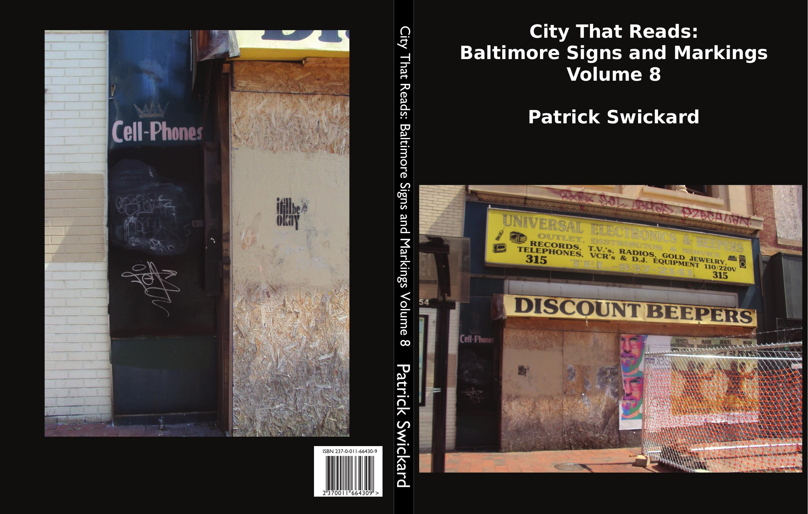

Do you know the importance of a skypager?
Those who don't believe, see you're laid behind
Got our skypagers on all the time
Hurry up and get yours, 'cause I got mine
Especially if you do shows, they come in fine
If you're with a G, and you're sippin' wine
Eatin' cacciatore with a twist of lime
Gotta meet your lover at a quarter to nine
Joint by base, then you get your high
-A Tribe Called Quest
A trip up Guilford Ave. Howard Street downtown. Names in the sidewalk. Practicing the alphabet with sidewalk chalk. Drug dealer countermeasures. A trip up Barclay. Harwood. Salon signs. FMOT. Theoretical evil ceramics. Decorated orange smokestacks. Stab van. Grand Prix markings. Downtown. Psychic readings. Wine signs. Road closures. Hopscotch. Howard Street clowns. An ugly bus stop brightened with an attractive photo of a building a few blocks away. Wheat pastes and movie posters. Trompe l'oeil on boarded up doorways. Lexington Market. Crabs. Almost 7-11s. More pole fashion.
Includes:
Random sample page: